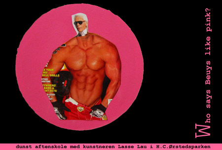

| dunst aftenskole |
Tirsdag 21. Juni 2005 |
 |
|
| Han taler om sine kunstprojekter som er homorelaterede. Bla.a.
om et projekt hvor han lavede bollebuske i bunkerne i H.C.Ørstedsparken... STED: ved caféen i parken. (Hvis det regner går vi over i LBL's lokaler i Teglgårdstræde 13 som ligger lige over for parken.) TID: kl 22. Gratis. |
|